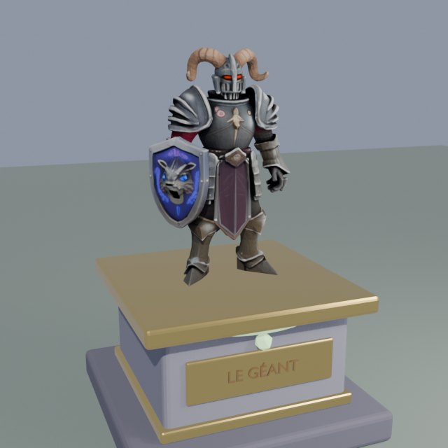
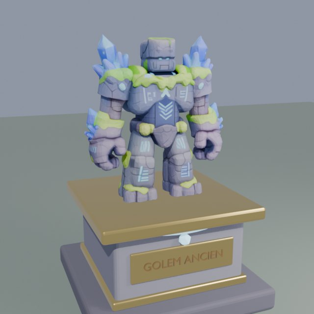
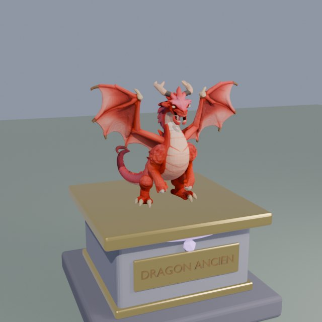
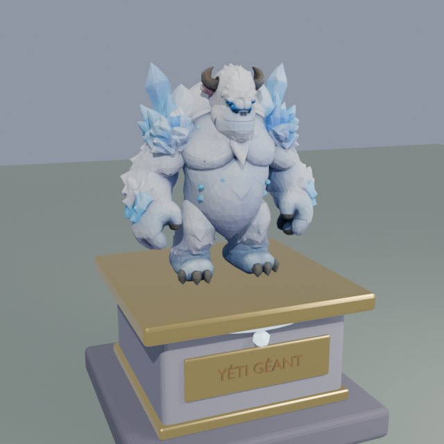
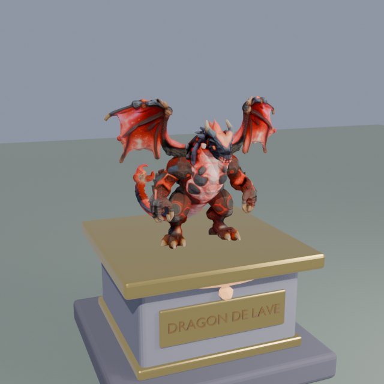
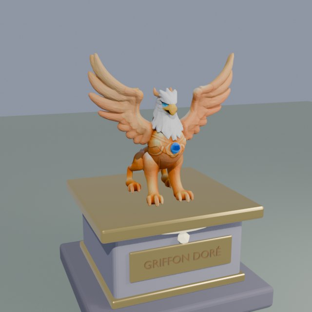
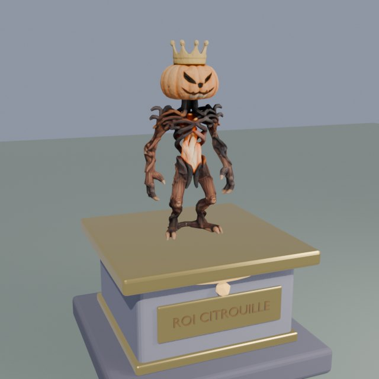
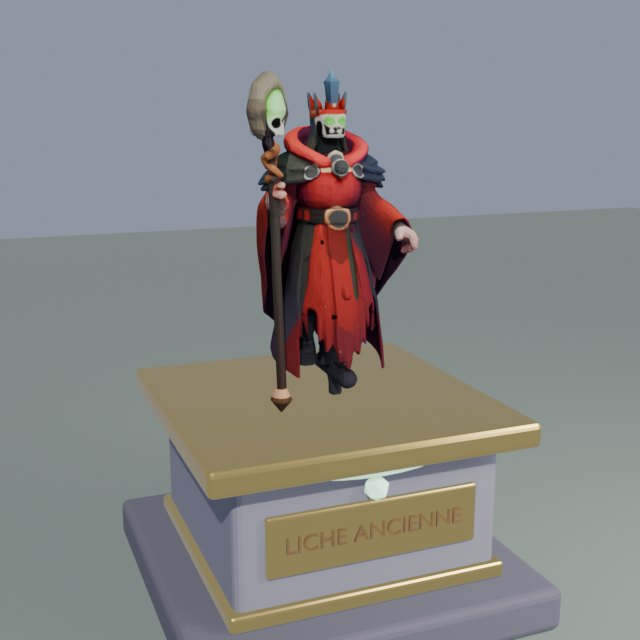
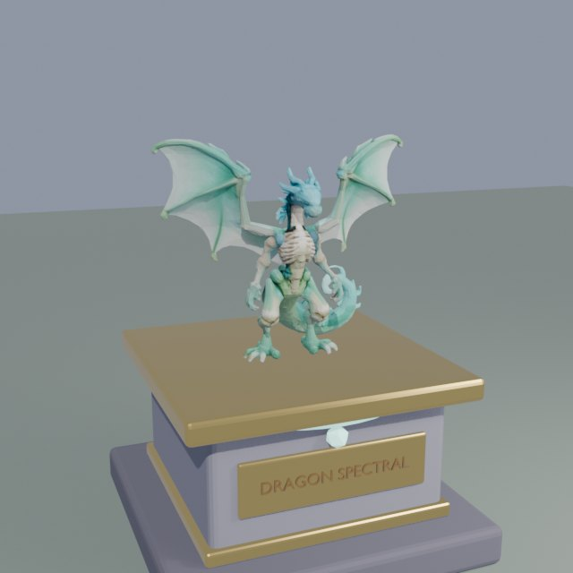
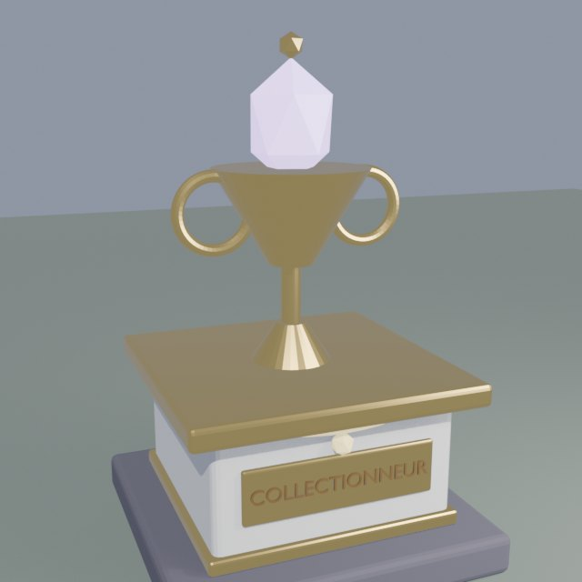

Rendus faits dans Blender avec les vrais modèles des boss. Chaque trophée : un socle de pierre à liseré doré, une plaque dorée gravée au nom du boss, une petite gemme de la couleur de sa zone, et le boss en miniature dessus. Dans le jeu, la miniature sera le boss tel qu'il est en combat, à environ 2 cases de haut.
Boss des zones

Le Géant · Prairie · 120 🪙

Golem Ancien · Grotte · 160 🪙

Dragon Ancien · Bois des Ombres · 200 🪙

Yéti Géant · Glaces · 250 🪙

Dragon de Lave · Volcan · 300 🪙

Griffon Doré · Céleste · 400 🪙
Boss de saison (Halloween)

Roi Citrouille · 200 🪙

Liche Ancienne · 250 🪙

Dragon Spectral · 300 🪙
Palier 🥇 75 espèces

Statue du collectionneur : socle de marbre, coupe dorée et œuf de cristal violet lumineux. Offerte au palier 75 (pas à acheter).
Comment ça marchera
Nouvelle catégorie « 🏆 Trophées » dans le mode construction (2 × 2 cases).
Un trophée reste 🔒 verrouillé tant que tu n'as pas battu ce boss au moins une fois ; ensuite il s'achète en 🪙. Un seul exemplaire de chaque.
Chaque trophée posé : +5 % de revenu au jardin.
Les boss de saison : trophée débloquable seulement pendant leur saison, mais il reste à toi après.
Dis-moi si un trophée est à revoir (taille, socle, couleurs), sinon je les mets dans le jeu.